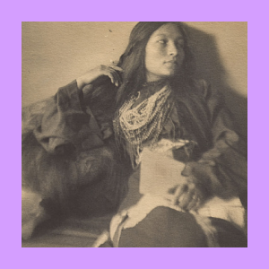
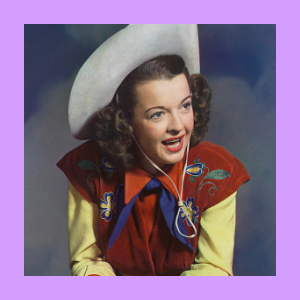
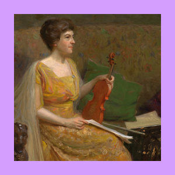
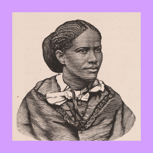
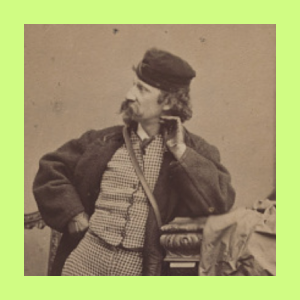

Why These Sitters Are Remembered
in the National Portrait Gallery, by Gender
Explore the “careers” of the sitters featured in the Smithsonian National Portrait Gallery,
categorized by gender over time. It draws from a dataset of 14,490 documents.





All the Portraits in the National Portrait Gallery that we use in this visualization include
What did these people do, for them to be painted? Here is a look at the proportion and count by topic and career over time.
☞ Click to see the details ☜
×
While the insights here may not be particularly surprising, as per the U.S. Department of Labor, as of September 2024, 58% of women are a part of the workforce, whereas 68% of their male counterparts are. This indicates a marked difference from the visualized data, but within this change, we’d like to ask whether gender roles really are a thing of the past, or if there are hints of the present in this dataset we have visualized.
In this dataset, men clearly take the cake in military and politics while women, those who did work, seemed focused on arts and social welfare.
Has this changed today? Are all industries equally inviting for women? For the ones which are, are they valued by society in equal terms as the male-dominated ones?